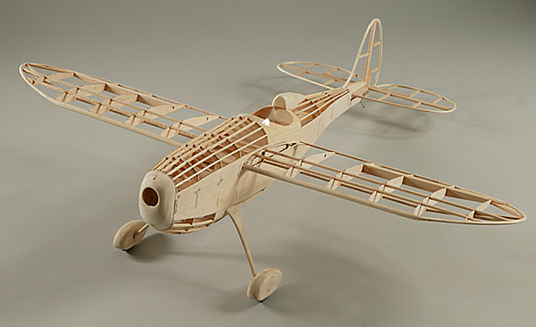
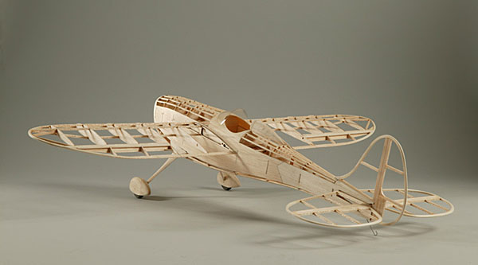
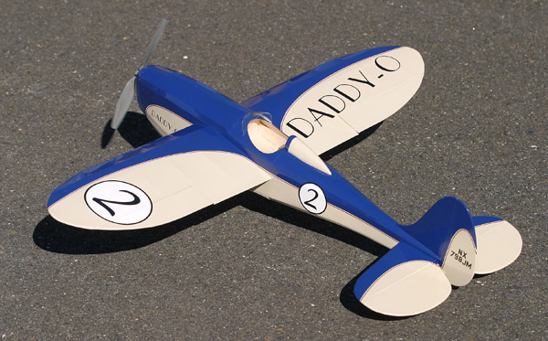
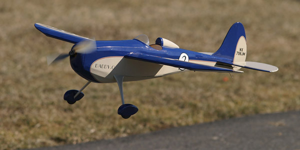
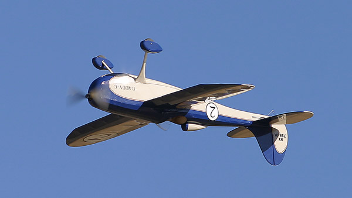
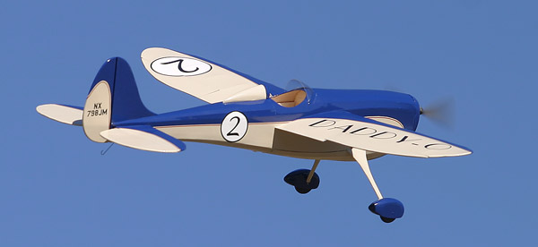

McGuire Daddy-O Racer |
|---|
| Updated 9/29/07 |
|  |
|  |
|  |
Despite the missing pilot, the first flights of my Daddy-O were a great success. It is very well balanced, takes off at just over 1/3 throttle, easily loops from level flight and rolls smoothly. That long tail provides a lot of stability and control. Daddy-O easily handles the wind, measured at 8-11 mph just before these photos were taken, and shows no tendency to snap while pulling tight turns. Stalls are a non event, with the nose dropping straight ahead as it regains speed. |
|
 This model was featured as a pull out plan and construction article in the June 2005 issue of Fly RC magazine. The plans in the magazine have a 16 inch wing span, which just happens to be the actual size of Jason McGuire's original Free Flight Daddy-O. While my model used sheet balsa sides, Jason's original truss is also shown on the plans. Any Free Flight modeler worth their salt will have no trouble working around the servos and electric motor shown.
|
My Daddy-O was originally powered with a direct drive brushless AXI 2204/54 motor with a Kokam 2S 320-700mAh Li-Poly battery. Jeti 4 amp ESC and APC 8x3.8 prop. The radio was a Hitec Optic 6 transmitter, Electron 6 receiver, and 4 HS-50 servos.  The finish is SIG Manufacturing's AeroKote Lite. This film goes on easily, and is very opaque. Note the white circles on the fuselage sides. They do not show the blue through. Markings are a mix of AeroKote Lite and CNC cut vinyl. |

| Daddy-O II Stats | |
|---|---|
| Wingspan: | 32 inches |
| Length: | 28 inches |
| Wing Area: | 194 sq. in. |
| Flying Weight: | 9.1 ounces |
| Wing Loading: | 6.75 oz./sq. ft. |

My very special thanks to Jason McGuire for inspiring this model with his original. The public response to this model has exceeded all expectation. Daddy-O seems to be gaining a significant following. I have recently built the Daddy-O 525. It is 150% larger and spans 52.5 inches. NEAT Fair 2006 This is a great design to pass around. It is so mild mannered yet is also capable of some fine sky dancing. I don't remember everyone who has flown it, but this year at the NEAT Fair 2006 alone the list included Keith Shaw, Dave Baron, Jim Ryan, Bob Aberle, Dick Miller, Chris Parent, Don and Nate Bousquet, Zeke Brubaker (Park Scale Models), Allen Mrock (Classic Aero), Paul Dixon and many others. Last year at NEAT, Scott Stoops (RC Pilot Guide) couldn't resist the temptation to perfect his landings and touch and go's, while Bill Stevens (Stevens Aero) followed up Scott's practice sessions with the world's first Daddy-O rolling circle. I have let some pilots who still have training wheels fly it to let them know they don't need to suffer the boxy trainer for long. All who have held the trasnsmitter have loved Daddy-O, and no one has had trouble with it. There is little question that this is my favorite model. Apparently others agree, as Daddy-O was awarded "Best in Show - Sport" at the NEAT Fair 2006. Thank you to all who had a hand in that decision. |
Daddy-O
|
WRAM Show 2005 |
NEAT Fair 2006 |
|---|
Copyright 2006, Thayer Syme. All rights reserved